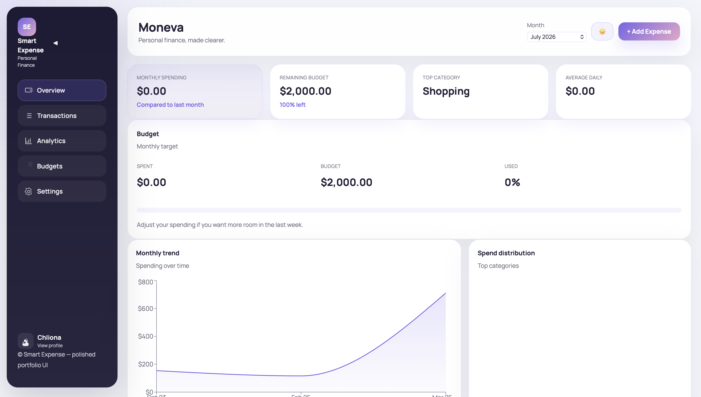

Financial Overview
Displays monthly spending, remaining budget, top spending category, and transaction activity in a compact summary.
Financial Analytics • Full-Stack Development • Data Visualization
A responsive personal finance dashboard for recording expenses, monitoring monthly budgets, identifying spending patterns, and managing transactions through an interactive analytics interface.

The Smart Expense Tracker is a personal finance application that helps users record expenses, review transaction history, monitor a monthly budget, and understand where their money is going.
I designed the application around three main workflows: understanding the current financial position, managing individual transactions, and analyzing longer-term spending patterns.
The project combines front-end dashboard development, financial metric calculations, responsive data visualization, and integration with an expense-management backend.
Displays monthly spending, remaining budget, top spending category, and transaction activity in a compact summary.
Users can add, edit, review, and delete expense records through a structured transaction workflow.
Compares current monthly spending against a defined budget and shows how much money remains available.
Visualizes monthly trends and category-level spending to help users identify changes in financial behavior.
Transactions can be filtered by keyword, category, date range, and minimum or maximum amount.
The dashboard adapts across desktop, tablet, and mobile screen sizes while preserving access to core financial information.
The user enters an amount, category, description, and transaction date through the expense form.
The frontend sends the transaction to the backend API, which stores the expense and returns the updated record.
The application calculates monthly totals, remaining budget, average spending, and category-level summaries.
The processed results are displayed through summary cards, charts, progress indicators, insights, and transaction tables.
The dashboard converts individual expense records into financial summaries that are easier to interpret and compare.
Calculates the total value of transactions recorded during the current month.
Subtracts current monthly spending from the configured monthly budget.
Groups expenses by category and identifies the category with the largest total spending.
Measures the average amount spent per day during the current reporting period.
Aggregates expense records by month to visualize changes in spending over time.
Compares the relative contribution of categories such as food, transportation, subscriptions, and shopping.
Financial applications require clear feedback and careful handling of incomplete or invalid input. The expense workflow includes validation, loading states, error handling, empty states, and confirmation messages.
Dashboard values depend on the same underlying expense records. I separated calculation utilities from UI components so metrics, filters, and charts could reuse consistent analytical logic.
The application coordinates loading, error, empty, editing, deletion, modal, and notification states without interrupting the primary expense workflow.
Desktop tables and multi-column dashboard panels needed to remain understandable on smaller screens. I adapted grids, chart layouts, controls, and transaction presentation for mobile use.
The interface was redesigned to prioritize monthly financial performance while keeping transaction entry and detailed analytics accessible without overcrowding the overview.